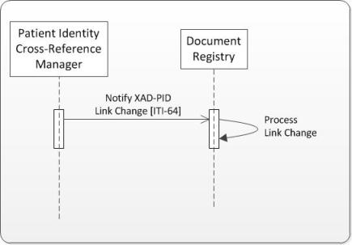
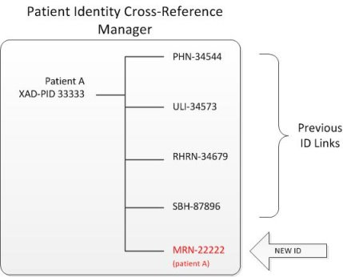
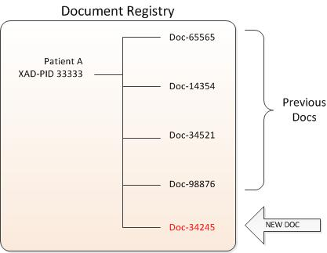
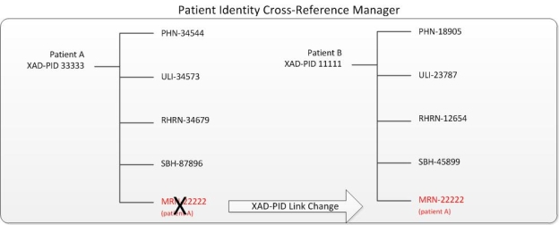
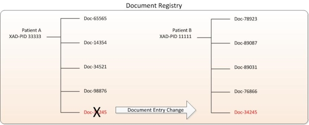
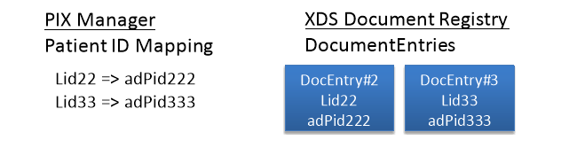
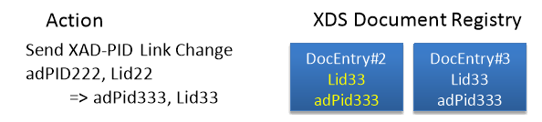
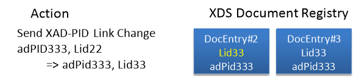

31 XAD-PID Change Management (XPID)
The XAD-PID Change Management (XPID) Profile describes how changes to the links between local patient identifiers and the identifier used by the XDS Affinity Domain can be communicated and managed.
Each clinical system that participates in the XDS Affinity Domain will likely use different identification means for its patients. XDS requires a common, reliable identification scheme that can be used across the entire XDS Affinity Domain. XDS assumes that the XDS Affinity Domain will establish common means to create a unique patient identifier for persons involved in the domain and allow Document Sources to find the appropriate patient identifier prior to publishing documents to the XDS infrastructure. This identifier is called the XDS Affinity Domain Patient Identifier (XAD-PID).
The simplest approach for the XAD-PID is to use a shared patient identification, such as a regional or national patient identifier. In other situations, Patient Identity Cross Reference (PIX) Profile or similar approaches are typically used to manage the correlation of identifiers across the XDS Affinity Domain. A Patient Identity Cross-Reference Manager provides each Document Source and Document Consumer a match between the patient’s local identifier and the common XAD-PID.
The key point regarding the matching of local identifier and XAD-PID is that the XDS Affinity Domain patient identifier is the authoritative means for identifying patients and grouping documents within the XDS Document Registry. Although the local patient identifier is also provided with each document, it is not considered authoritative, is not used for grouping and cannot be specified as a query parameter.
This integration profile will establish the transactions and actor behaviors required to support XAD-PID link change events. Merge events of XAD-PIDs are handled in the XDS Profile. Merge events of local patient identifiers are handled in this profile. Unmerge events are considered too complex, often requiring manual intervention, and have not been profiled.
The adoption of this profile requires that the local patient identifier (i.e., sourcePatientId) gain significant importance, as it will be used by the XDS Document Registry to determine which objects are affected by a particular link change event. This requirement has obvious and non-trivial impacts to the design and implementation of an XDS Document Registry.
The approach used in this profile is based on link change notifications being sent from the PIX Manager to the Document Registry, which will then perform an update to possibly many objects within its database. The changes reflect the new link between a local patient identifier and the corresponding XAD-PID. These updates follow the same technical requirements and behaviors defined in the Update Document Set [ITI-57] transaction with the change resulting in a new version of all affected objects. After all changes have been performed, one or more associations for the updated objects may no longer be valid. For example, a document may no longer have the same patientID as the folder it belonged to previously. The Document Registry will have to detect these occurrences and provide the necessary documentation and alerting actions.
31.1 XPID Actors/ Transactions
Figure 31.1-1 shows the two actors directly involved in the XAD-PID Change Management Profile and the relevant transaction between them. Other actors that may be indirectly involved due to their participation in XDS or PIX are not shown.

Figure 31.1-1: XAD-PID Change Management Profile Actor Diagram
Table 31.1-1 lists the transactions for each actor directly involved in the XAD-PID Change Management Profile. In order to claim support of this Integration Profile, an implementation must perform the required transactions (labeled “R”). Transactions labeled “O” are optional. A complete list of options defined by this Integration Profile and that implementations may choose to support is listed in Section 31.2.
Table 31.1-1: XAD-PID Change Management Profile - Actors and Transactions
| Actors | Transactions | Optionality | Reference |
| Document Registry | Notify XAD-PID Link Change [ITI-64] | R | ITI TF-2b: 3.64 |
| Patient Identity Cross-Reference Manager | Notify XAD-PID Link Change [ITI-64] | R | ITI TF-2b: 3.64 |
31.1.1 Actor Descriptions and Requirements
Most requirements are documented in Transactions (Volume 2). This section documents any additional requirements on profile’s actors.
31.1.1.1 Patient Identity Cross-Reference Manager Actor
In order for the XAD-PID link changes to be processed according to this profile, the following requirements apply to the Patient Identity Cross-Reference Manager:
- The Assigning Authority for every applicable sourcePatientId is a source to the Patient Identity Cross Reference Manager.
- The Assigning Authority that manages the XAD-PID domain is also a source to the Patient Identity Cross Reference Manager.
- The Patient Identity Cross Reference Manager has the ability to identify the Assigning Authority for the XAD-PID domain.
The first two requirements enable the Patient Identity Cross-Reference Manager to establish links between the sourcePatientId and the XAD-PID , while the third requirement enables it to determine which identifier is the XAD-PID and when to trigger the notification transaction.
31.2 XPID Actor Options
Options that may be selected for this Integration Profile are listed in the Table 31.2-1 along with the actors to which they apply. Dependencies between options when applicable are specified in notes.
Table 31.2-1: XAD-PID Change Management (XPID) - Actors and Options
| Actor | Options | Vol & Section |
| Document Registry | No options defined | - - |
| Patient Identity Cross-Reference Manager | No options defined | - - |
31.3 XPID Required Actor Groupings
An actor from this profile (Column 1) shall implement all of the required transactions and/or content modules in this profile in addition to all of the transactions required for the grouped actor (Column 2).
Table 31.3-1: XPID - Required Actor Groupings
| XPID Actor | Actor to be grouped with | Reference | Content Bindings Reference |
| Document Registry | CT / Time Client | ITI TF-1: 7 . | -- |
| ATNA / Secure Node or Secure Application | ITI TF-1: 9.1 | -- | |
| XDS.b / Document Registry | ITI TF-1: 10.1 | -- | |
| Patient Identity Cross-Reference Manager | CT / Time Client | ITI TF-1: 7 | -- |
| ATNA / Secure Node or Secure Application | ITI TF-1: 9 | -- |
31.4 XPID Overview
31.4.1 Process Flow
Figure 31.4.1-1: Basic Process Flow in XAD-PID Change Management (XPID) Profile
31.4.2 Use Cases
31.4.2.1 XAD-PID Link Change Use Case
This section illustrates the XAD-PID Link change use case.
In this scenario a patient presents to a service location in a given XDS Affinity Domain for the first time and a set of shareable clinical documents are created for that encounter.
That service location is assumed to be a Patient Identity Source to the XDS Affinity Domain Patient Identity Cross-Reference Manager. The local ID for that patient (MRN 22222) is mapped (i.e., linked) by the Patient Identity Cross-Reference manager to an existing XAD-PID (XAD-PID 33333) (see Figure 31.4.2.1-1).
Figure 31.4.2.1-1: Local Patient Added to the Patient Identity Cross-Reference Manager
A document (ID #34245) is created from this encounter and published to the XDS Document Repository and XDS Document Registry using that XAD-PID (see Figure 31.4.2.1-2).

Figure 31.4.2.1-2: Document Published to Document Registry
However, at some later time, it is discovered that the local patient ID in this use case should not have been linked to XAD-PID #33333 in the first place and that in fact, it should have been linked to another identifier (XAD-PID #11111) as shown below in Figure 31.4.2.1-3.
Figure 31.4.2.1-3: Local Patient is Assigned New XAD-PID in Patient Identity Cross-Reference Manager
In this case, we see that the correct XAD-PID is 11111 and the change occurs normally within the Patient Identity Cross-Reference Manager from the Patient Identity Feed. However, the previously published document (DOC 34245) needs to be corrected and reflect this change.
Given that the original Document Source may not be aware that the link change event has occurred, it cannot be expected to deprecate and re-publish the document itself. Also, unless some type of notification is sent to the Document Registry, it also cannot process the event (see Figure 31.4.2.1-4).
Figure 31.4.2.1-4: Document Registry Needs to Reflect XAD-PID change
Once the XAD-PID link change event is processed by the Document Registry:
- All documents that were published through an XDS Provide and Register transaction with the local patient identifier (MRN 22222) are now joined with documents belonging to its new common identifier (XAD-PID 11111).
- All XDS Stored Query transactions referencing the new identifier (XAD-PID 11111) will return documents including those belonging to the local patient identifier (MRN 22222).
31.4.2.2 Local Patient Identifier Merge Use Case
This section illustrates the Local Patient Identifier Merge use case.
Use Case 1: Local patient identifier merge with two different XAD-PID
In this scenario two local identifiers, mapped to two different XAD-PID, are merged due to a change in demographics. Figure 31.4.2.2-1 shows the initial state, where Lid22 is linked to adPid222, Lid33 is linked to adPid333 and there is a DocumentEntry in the Document Registry for each of these local identifiers.
Figure 31.4.2.2-1: Original State
After these documents have been registered in the Document Registry, the Patient Identity Cross-Reference Manager determines, through a demographics change, that Lid22 and Lid33 refer to the same person and need to be merged. It chooses to merge Lid22 into Lid33, resulting in an updated Patient ID mapping which does not include Lid22 as shown in Figure 31.4.2.2-2.
Figure 31.4.2.2-2: Local Patient ID merge
In order to properly update the Document Registry with this change the Patient Identify Cross-Reference Manager must send a XAD-PID link change event, updating the XAD-PID associated with Lid22 to the new XAD-PID and showing the merge of Lid22 into Lid33 as reflected in Figure 31.4.2.2-3.
Figure 31.4.2.2-3: Sent Notify XAD-PID Link Change
Use Case 2: Local patient identifier merge mapped to same XAD-PID
The next scenario differs in that the merged local identifiers are already mapped to the same XAD-PID (see Figure 31.4.2.2-4).
Figure 31.4.2.2-4: Original State same XAD-PID
After the Patient Identity Cross-Reference Manager merges Lid22 into Lid33, the updated Patient ID Mapping does not include Lid22. Figure 31.4.2.2-5 shows the updated state of the PIX Manager but the Document Registry update has not yet occurred.
Figure 31.4.2.2-5: Local Patient ID merge
To update the Document Registry with this change, the Patient Identify Cross-Reference Manager must send a XAD-PID link change event showing the merge of Lid22 into Lid33 as reflected in Figure 31.4.2.2-6.
Figure 31.4.2.2-6: Sent Notify XAD-PID Link Change
31.5 Security Considerations
The risk analysis for this profile enumerates assets, threats, and mitigations. The complete risk data is stored and maintained in a central location. The complete risk data is stored and available from IHE [10] .
The purpose of this risk assessment is to notify vendors of some of the risks that they are advised to consider in implementing XPID actors. For general IHE XDS risks and threats please see ITI TF-2x: Appendix K . The vendor is also advised that many risks cannot be mitigated by the IHE profile and instead the responsibility for mitigation is transferred to the vendor, and occasionally to the XDS Affinity Domain and enterprises. In these instances, IHE fulfills its responsibility to notify affected parties through the following section.
31.5.1 Requirements/Recommendations
The following mitigations shall be implemented by all XPID actors. These mitigations moderate all high impact risks.
- All actors in XPID shall be grouped with a CT Time Client. This grouping will assure that all systems have a consistent time clock. This is mandatory for ATNA Audit Logging, but may also be utilized by the systems to scope the changes to a time window.
- All actors in XPID shall be grouped with an ATNA Secure Node or ATNA Secure Application. This grouping will assure that only highly trusted systems can send this transaction to the Document Registry and that all changes are recorded in the audit log.
The following mitigations are transferred to the vendors, XDS Affinity Domains, and enterprises.
- Network protection services are recommended to be sufficient to guard against denial of service attacks on all service interfaces.
- A process that reviews audit records and acts on inappropriate actions is recommended.
- It is recommended that service interfaces be implemented with a good design to guard against corruption and denial of service attacks.